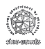
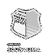

Felipe Parreiras
Product Designer
Through my work, I have created products used by companies such as:







About
Product design, from discovery to delivery.
I’m a UX & UI Designer certified by Google, working as a Product Designer and Project Manager. I work across the entire product development process, from discovery, ideation, and research to the creation of wireframes, high-fidelity prototypes, and usability testing. I also work directly with clients and Product Owners (POs). My routine includes creating development plans, managing sprints, and conducting quality assurance testing.

Selected work / 01
Highlights
Four projects across product design, digital services and new ways to understand interfaces.

XippTech
Benefits, health and HR software for people on both sides of the service.

MeuRH360
A people platform that grew with the teams using it.

UX Analyzer
A second pair of eyes for the details that shape an interface.

Flory
A little social world for people who grow things.
Selected work / 02
Solution and Innovations
The projects below demonstrate innovative solutions to real-world problems that are already being used in the market.


Selected work / 03
Style Guide
Examples of components, variants, typography, colour, shadows and interaction states.

Selected work / 04
Design & Prototypes
Figma projects that demonstrate UI craft, considered user flows and attention to user needs.

inClinic
One healthcare experience, considered across three screens.

File Guard
A focused security concept, ready to explore.

Castelo
An e-commerce concept in motion.

Wallet Guide
A guided path through a wallet experience.

Verona Film Festival
A screen-by-screen concept for a cultural event.
Selected work / 05
HTML & CSS
Front-end projects built with HTML and CSS. Explore the live pages and source repositories from each case.


Selected work / 06
AI Workflows
Designing and prototyping with AI, or using Figma MCP to keep hands-on control of the design.


Experience & education
Resume
Experience
- XippTech Product Designer
- Work directly with Product Owners and clients to build and maintain B2B software for HR, employee benefits and telemedicine, alongside end-user applications. Products are used by companies including iFood, Outback, Unimed, Samsung, Santander and others.
- MeuRH360 UX Lead & Product Manager · since June 2023
- Work across discovery, ideation, research, wireframing, high-fidelity prototyping and usability testing. Led workflows shaped by market needs and worked closely with clients and Product Owners across an HR management ecosystem.
- Agência RCX UX & UI Consultant · July 2022 — July 2023
- Created landing pages focused on selling online courses, contributing to increased student enrolment and reach among potential customers.
- Freelancer UX & UI Designer · May 2022 — July 2023
- Delivered complete projects and focused design stages, including research, brainstorming, wireframing, prototyping, visual design, mockups, usability testing and responsive design.
- Botelho Personalizados Branding & Lead Designer · April 2017 — April 2020
- Created customised content, visual identities and logos for digital and physical products.
- Community Development Volunteer
- Joined a construction team with IVHQ and Dream Livingstone Zambia to help build a public school in Livingstone, Zambia.
Professional courses
- Google UX Design Specialization Google · June 2023
- Pro Figma Udemy · May 2023
- HTML & CSS: Development Environments, File Structure and Tags Alura · January 2024
- Front-End Immersion Alura · January 2024
- Digital Product Week Tera · November 2023
- The New Era of UX Design UX Unicórnio · January 2024
Postgraduate specialisation
- LGPD — General Data Protection Law Legale Educacional · February 2024
- Digital Law Legale Educacional · February 2025
Languages
- PortugueseNative
- EnglishFluent
- SpanishIntermediate
Contact
Feel free to get in touch.
I’m open to questions, opportunities, or even just having a conversation about UX.